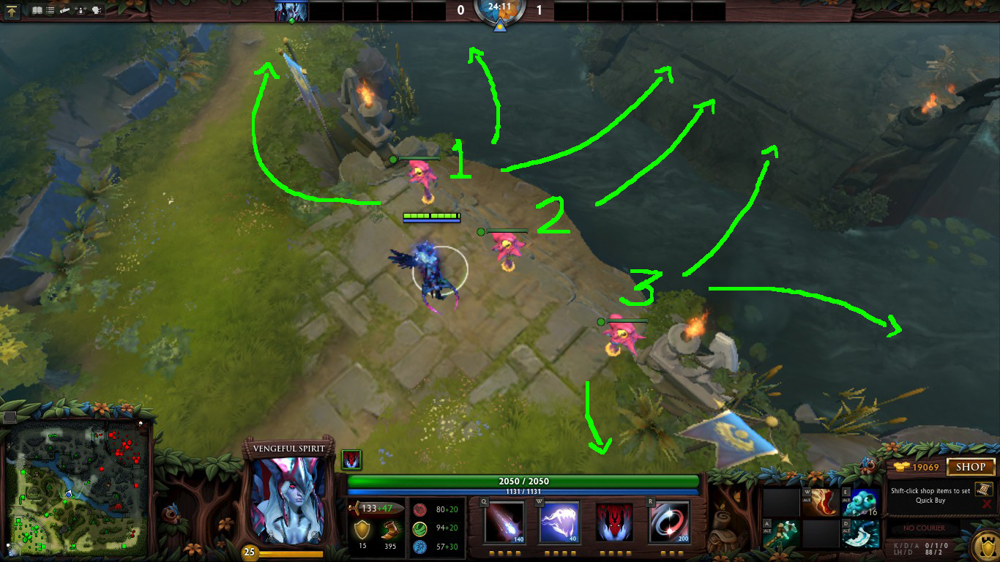

<!DOCTYPE html><html><head><meta charset="utf-8"><meta name="viewport" content="width=device-width, initial-scale=1, maximum-scale=1"><title>Presentasi | Warding</title><link rel="stylesheet" type="text/css" href="bower_components/prism/themes/prism.css"><link rel="stylesheet" type="text/css" href="bower_components/todc-bootstrap-main/dist/css/bootstrap.min.css"><link rel="stylesheet" type="text/css" href="styles/main-presentation.css"></head><body></body></html><nav role="navigation" class="navbar navbar-inverse"><div class="container"><div class="navbar-header"><button type="button" data-toggle="collapse" data-target="presentation-chooser" class="navbar-toggle"><span class="sr-only"></span><span class="icon-bar"></span><span class="icon-bar"></span><span class="icon-bar"></span></button><a href="index.html" class="navbar-brand">Presentasi</a></div><div id="presentation-chooser" class="collapse navbar-collapse"><ul class="nav navbar-nav"><li class="dropdown"><a data-toggle="dropdown" href="#" class="dropdown-toggle">Pilih Subtopik <b class="caret"></b></a><ul class="dropdown-menu"><li><a href="1Penjelasan.html">Penjelasan DotA 2 Secara Umum</a></li><li><a href="2Role.html">Role</a></li><li><a href="3Warding.html">Warding</a></li><li><a href="4Sniper.html">Hero Guide : Sniper</a></li></ul></li></ul></div></div></nav><article id="presentation"><section><h1 class="bullet">Sebelum ke Warding...</h1><p>Pernahkah kalian mengalami hal seperti dibawah ini?</p><hr><ul><li><em>"Gila gelap benar map di DotA 2."</em></li><li><em>"Gila gue mati terus di gank lawan."</em></li><li><em>"Gue takut maju.. abisnya lawan pada gak keliatan di map nih bro!!</em></li></ul></section><section><h1 class="bullet">Sebelum ke Warding...</h1><p>Atau pas kamu main hero support , pernah diginiin?</p><hr><ul><li><em>"We need wards!"</em></li><li><em>"Woe wards woee!"</em></li></ul></section><section><p class="bullet">Lalu apa sebenarnya kaitan itu semua dengan Warding??</p><ul><li>Sebenarnya , inti dari kelima statement tersebut terjadi karena tidak dipasangnya ward di map.</li><li>Dan dari kelima statement tersebut juga, dapat disimpulkan bahwa orang yang mengatakan statement tersebut , secara tidak langsung ingin agar supportnya memasang ward di map.</li></ul></section><section><h1 class="bullet">Lalu apa itu Warding ???</h1><ul> <li>Ward sering diibaratkan seperti "mata" yang bisa melihat keadaan wilayah lawan.</li><li></li><li>Jadi , warding adalah teknik peletakkan ward di titik-titik(spot) tertentu pada map agar team tersebut mendapat vision di daerah gelap tersebut(FoW).</li><li>Umumnya , peletakkan ward dilakukan di daerah gelap lawan.</li></ul></section><section><h1 class="bullet">Manfaat warding.....</h1><p>Kira-kira seberapa vital sih manfaat warding ??</p><hr><ul><li>Warding menjadi salah satu faktor yang menentukan keberhasil suatu team dalam game.</li><li>Alasannya utamanya simple : Jika anda tidak pasang ward otomatis anda akan digank terus menerus.</li><li>Mati terus menerus , maka anda tidak akan punya gold.</li><li>Tidak punya gold , maka tidak punya item.</li><li>Tidak punya item , maka anda hanya bisa pasrah.</li><li>Kalau sudah pasrah , saatnya anda katakan : </li><hr><li><strong><big>GGWP!!(GoodGameWellPlayed) :'( </strong></big></li></ul></section><section><h1 class="bullet">Manfaat warding adalah .....</h1><hr><ul><li>1. Membuka vision wilayah lawan atau istilah lainnya open map.</li><li>2. Anti-ganking.... ini karena jika wilayah lawan sudah bisa di"mata-matai",tentu kita akan jadi tau apa yang dilakukan oleh musuh termasuk jika musuh ingin meng-ganking hero kita.</li><li>3. Meng-counter hero invisible(tidak begitu efektif)</li><li>4. Dewarding.</li><li>5. Mengecek daerah rune.</li><li>6. Blocking Camp musuh.</li><li>7. Spy Roshan spot.</li></ul></section><section><h1 class="bullet">Jenis-jenis Ward....</h1><hr><p>Di Dota 2 , ward dibedakan menjadi dua jenis , yaitu : </p><ul><li><em> 1. OBSERVER WARDS.</em></li><li><em> 2. SENTRY WARDS. </em></li></ul></section><section><h1 class="bullet">Jenis-jenis Ward</h1><hr><ul> <li><em style="color:yellow">OBSERVERWARD</em>&nbsp;&nbsp;&nbsp;&nbsp;&nbsp;&nbsp;&nbsp;&nbsp;&nbsp;&nbsp;&nbsp;&nbsp;&nbsp;&nbsp;&nbsp;&nbsp;&nbsp;&nbsp;&nbsp;<em style="color:#00BFFF">SENTRYWARD</em></li><li>&nbsp;&nbsp;&nbsp;&nbsp;</li></ul></section><section><h1 class="bullet">Perbedaan Oberserver Ward dan Sentry Ward :</h1><ul><li style="color:white;">1.Dari segi harga :</li><li>Harga Observer ward = 75 gold (jumlah yang didapat : 1)</li><li>Harga Sentry ward = 200 gold (jumlah yang didapat : 2)</li><li>Kenapa lebih mahal ?? nanti saya jelaskan..</li><hr><li style="color:white;">2.Dari segi area vision :</li><li>Area vision untuk Observer ward = 1600 AoE (Lebih Luas)</li><li>Area vision untuk Sentry ward = 150 AoE (Lebih Sempit)</li><hr><li style="color:white;">3.Dari segi kegunaan :</li><li>Observer umumnya digunakan untuk membuka map agar mendapat vision wilayah lawan.</li><li>Sedangkan Sentry umumnya digunakan untuk meng-counter hero invisible lawan (tidak terlalu efektif)</li><li>Sentry juga dapat digunakan untuk men-deward ward milik lawan.</li></ul></section><section><h1 class="bullet">Strategi dalam penempatan wards...</h1><ul><li>Dota 2 erat kaitannya dengan strategi.</li><li>Tanpa strategi , permainan akan berantakan dan kemungkinan besar akan berakhir dengan kekalahan.</li><li>Salah satu strategi dalam Dota adalah strategi penempatan wards</li><li>Apa saja strategi dalam penempatan wards ??</li></ul></section><section><h1 class="bullet">Pembagian Strategi Dalam Penempatan Wards</h1><ul><li>Ada 2 Strategi dalam penempatan wards yaitu :</li><li><em>1.Defensive Wards</em></li><li><em>2.Offensive Wards</em></li></ul></section><section><h1 class="bullet">Defensive Wards</h1><ul><li>Wards yang diletakkan di spot tertentu (lebih ke arah wilayah sendiri)dengan tujuan lebih ke arah pertahanan (anti ganking)</li><li>Saat sedang terpuruk atau tertekan , defensive wards merupakan hal wajib yang harus dilakukan.</li><li>Kalau tidak , maka tim anda akan kian terpuruk.</li></ul></section><section><h1 class="bullet">Offensive Wards</h1><ul><li>Wards yang diletakkan di spot tertentu (lebih ke arah wilayah lawan) dengan tujuan lebih ke arah penyerangan. (ganking)</li><li>Saat tim anda sedang unggul , offensive wards bisa menjadi salah satu opsi bagi anda untuk melanjutkan pesta kill kalian.</li><li><em>"More Gank, More Kill, More Fun"</em></li><hr><li>Offensive ward juga terkadang digunakan untuk memblock camp(neutral creeps camp) lawan dengan tujuan agar selama dalam posisi tertekan , carry lawan tidak bisa farm di hutan mereka sendiri.</li></ul></section><section><h1 class="bullet">Lokasi ideal untuk warding</h1><ul><li>Daritadi kita sudah membicarakan mengenai apa itu wards dan apa saja manfaatnya</li><li>Sekarang mari kita lihat dimana lokasi-lokasi ideal untuk warding...</li></ul></section><section><h1 class="bullet">Lokasi ideal untuk warding :</h1><ul><li>Radiant side bottom lane, Defensive ward</li><li> &nbsp;&nbsp;&nbsp;&nbsp;&nbsp;&nbsp; </li></ul></section><section><h1 class="bullet">Lokasi ideal untuk warding :</h1><ul><li>Radiant side bottom lane, Defensive ward</li><li> &nbsp;&nbsp;&nbsp;&nbsp;&nbsp;&nbsp; </li></ul></section><section><h1 class="bullet">Lokasi ideal untuk warding :</h1><ul><li>Radiant side bottom lane, Defensive ward</li><li> &nbsp;&nbsp;&nbsp;&nbsp;&nbsp;&nbsp; </li></ul></section><section><h1 class="bullet">Lokasi ideal untuk warding :</h1><ul><li>Radiant side bottom lane, Defensive ward</li><li> &nbsp;&nbsp;&nbsp;&nbsp;&nbsp;&nbsp; </li></ul></section><section><h1 class="bullet">Lokasi ideal untuk Warding :</h1><ul><li>Radiant side bottom lane, Offensive ward</li><li> &nbsp;&nbsp;&nbsp;&nbsp;&nbsp;&nbsp; </li></ul></section><section><h1 class="bullet">Lokasi ideal untuk Warding :</h1><ul><li>Radiant side bottom lane, Offensive ward</li><li> &nbsp;&nbsp;&nbsp;&nbsp;&nbsp;&nbsp; </li></ul></section><section><h1 class="bullet">Lokasi ideal untuk Warding :</h1><ul><li>Radiant side bottom lane, Offensive ward</li><li> &nbsp;&nbsp;&nbsp;&nbsp;&nbsp;&nbsp; </li></ul></section><section><h1 class="bullet">Lokasi ideal untuk Warding :</h1><ul><li>Radiant side middle lane, Defensive ward</li><li> &nbsp;&nbsp;&nbsp;&nbsp;&nbsp;&nbsp; </li></ul></section><section><h1 class="bullet">Lokasi ideal untuk Warding :</h1><ul><li>Radiant side middle lane, Defensive ward</li><li></li></ul></section><section><h1 class="bullet">Lokasi ideal untuk Warding :</h1><ul><li>Radiant side middle lane, Offensive ward</li><li> &nbsp;&nbsp;&nbsp;&nbsp;&nbsp;&nbsp; </li></ul></section><section><h1 class="bullet">Lokasi ideal untuk Warding :</h1><ul><li>Radiant side middle lane, Offensive ward</li><li> &nbsp;&nbsp;&nbsp;&nbsp;&nbsp;&nbsp; </li></ul></section><section><h1 class="bullet">Lokasi ideal untuk Warding :</h1><ul><li>Radiant side middle lane, Offensive ward</li><li> &nbsp;&nbsp;&nbsp;&nbsp;&nbsp;&nbsp; </li></ul></section><section><h1 class="bullet">Lokasi ideal untuk Warding :</h1><ul><li>Radiant side middle lane, Offensive ward</li><li></li></ul></section><section><h1 class="bullet">Lokasi ideal untuk Warding :</h1><ul><li>Radiant side top lane, Defensive ward</li><li> &nbsp;&nbsp;&nbsp;&nbsp;&nbsp;&nbsp; </li></ul></section><section><h1 class="bullet">Lokasi ideal untuk Warding :</h1><ul><li>Radiant side top lane, Defensive ward</li><li> &nbsp;&nbsp;&nbsp;&nbsp;&nbsp;&nbsp; </li></ul></section><section><h1 class="bullet">Lokasi ideal untuk Warding :</h1><ul><li>Radiant side top lane, Defensive ward</li><li> &nbsp;&nbsp;&nbsp;&nbsp;&nbsp;&nbsp; </li></ul></section><section><h1 class="bullet">Lokasi ideal untuk Warding :</h1><ul><li>Radiant side top lane, Offensive ward</li><li> &nbsp;&nbsp;&nbsp;&nbsp;&nbsp;&nbsp; </li></ul></section><section><h1 class="bullet">Lokasi ideal untuk Warding :</h1><ul><li>Radiant side top lane, Offensive ward</li><li> &nbsp;&nbsp;&nbsp;&nbsp;&nbsp;&nbsp; </li></ul></section><section><h1 class="bullet">BONUS : BLOCKING NEUTRALS CAMPS</h1><ul><li>Seperti yang saya katakan sebelumnya , ward bisa digunakan untuk blocking camp..</li><li>Berikut adalah spot-spotnya :</li><li> &nbsp;&nbsp;&nbsp;&nbsp;&nbsp;&nbsp; </li></ul></section><section><h1 class="bullet">BONUS : BLOCKING NEUTRALS CAMPS</h1><ul><li>Blocking Neutrals Camps Spot :</li><li> &nbsp;&nbsp;&nbsp;&nbsp;&nbsp;&nbsp; </li></ul></section><section><h1 class="bullet">BONUS : BLOCKING NEUTRALS CAMPS</h1><ul><li>Blocking Neutrals Camps Spot :</li><li> &nbsp;&nbsp;&nbsp;&nbsp;&nbsp;&nbsp; </li></ul></section></article><script src="bower_components/bespoke.js/dist/bespoke.min.js"></script><script src="bower_components/bespoke-bullets/dist/bespoke-bullets.min.js"></script><script src="bower_components/bespoke-scale/dist/bespoke-scale.min.js"></script><script src="bower_components/bespoke-hash/dist/bespoke-hash.min.js"></script><script src="bower_components/bespoke-progress/dist/bespoke-progress.min.js"></script><script src="bower_components/bespoke-state/dist/bespoke-state.min.js"></script><script src="bower_components/prism/prism.js"></script><script src="bower_components/prism/components/prism-bash.min.js"></script><script src="scripts/main.js"></script><script src="bower_components/jquery/jquery.min.js"></script><script src="bower_components/todc-bootstrap-main/dist/js/bootstrap.min.js"></script>